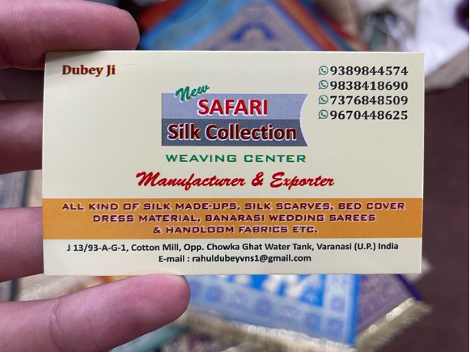

I'm hosted with GitHub Pages
When visiting the North Indian city of Varanasi in Uttar Pradesh, Muthu and I learned that there are two types of people who want your money—beggars and peddlers. Beggars ask for your charity, and peddlers ask for your business. Among both groups, scammers abound. Any type of foreigner is at risk for a scam in India. Even people from India are at risk for scams if they travel outside of their home state. Muthu was at risk for scams in Varanasi because he was not from Uttar Pradesh. American foreigners are especially at risk for scams. A dollar goes a lot further in India than in America, so when people see an American, they get dollar signs in their eyes. In Varanasi, I was more attuned to scams conducted by beggars, and Muthu was more attuned to scams conducted by peddlers. To evade beggars and peddlers alike, Muthu and I would shake our heads and repeat one of the only Hindi words we knew: “nahi, nahi, nahi,” which means “no, no, no.”
In India—and especially in Varanasi—beggars are ubiquitous. Beggars will approach you on the street, outstretch their hand, assume a melancholy face, and ask for money until you leave. An ethical question worth consideration: Ought we to give to beggars? If so, when and to whom? At first brush, our instinct tells us that it is good to give to beggars since giving to beggars is an act of generosity, and generosity is good. The Tamil poet Thiruvalluvar extols the virtue of charity:
Call that a gift to needy men thou dost dispense, All else is void of good, seeking for recompense. (Thirukkural 221)
Practical issues quickly overshadow this simplistic view. Many, like Norwegian philosopher Ole Martin Moen, point out that giving to beggars enables them to replace a productive life of working with an unproductive life of leisure, potentially including substance abuse. While this would not apply to genuinely disabled or structurally unemployed, these issues are not to be ignored.
Practicing charity in India raises separate practical concerns. Blogger Sharell Cook notes that in India, organized gangs often run begging rings, some with ties to human trafficking. Giving to beggars, she argues, could perpetuate these vices. That said, if we cast these practical concerns aside by assuming that the recipient is genuine, other difficulties surface. If charity is good, does that imply that we ought to give to all genuine beggars? What if we stretch ourselves too thin? Is there a better way to use our scarce resources?
Utilitarian philosophies propose answers to these queries. Utilitarianism is a moral philosophy that argues that moral actions are those which maximize wellbeing. In the case of begging, Ole Martin Moen argues that giving money to beggars, especially Western beggars, is suboptimal because physical proximity and appearance inform our decision more than actually maximizing wellbeing. Moen is certainly right in this regard. In Varanasi, Muthu and I encountered numerous people that were more effective at grabbing and maintaining our attention, even if those people may have been less needy. Many able-bodied women relentlessly knocked on our car window, making us more likely to give—if only to make them go away. These women might not have been the neediest, but they were certainly the most effective.
One young woman, carrying a child with scarring on his back, petitioned Muthu for money. Muthu, whose heartstrings were sufficiently taut and pockets were sufficiently empty, asked me to front him 100 rupees (which he later repaid). According to Cook, you shouldn’t give Indian beggars more than 20 rupees. While giving the equivalent of an American quarter might feel stingy, 20 rupees could afford the beggar a small meal consisting of 2 idlys and sambar. Despite my objections, Muthu persisted in giving the woman 100 rupees, or
$1.25.
Moen suggests that pocket change like the 100 rupees that Muthu gave could be used more efficiently by a cost-effective charity or a person in a chronically poor region like Sub-Saharan Africa. As noted by philosopher Richard Christian, Moen does not simply assert that you don’t need to give money to beggars—he asserts that you should not give money to beggars. Moen’s reasoning is far from decisive. American philosopher Paul Hurley argues that utilitarianism does not provide strong reasons for people to adhere to its moral standards. The choice to maximize total wellbeing is arbitrary at best. Richard Christian likewise argues that maximization of wellbeing hardly possesses an absolute claim on morality. Instead, Christian proposes that other considerations like human compassion and fellowship can outweigh the importance of maximizing wellbeing when evaluating moral decisions. Christian argues that the practice of charity tends to promote human fellowship. Thiruvalluvar subscribes to the same philosophy, writing:
The suppliants' cry for aid yields scant delight, Until you see his face with grateful gladness bright. (Thirukkural 224)
Richard Christian’s fellowship model faces the same practical concerns as our first model. Like before, these concerns are exacerbated in an Indian environment, where begging scams are rampant. Cook notes that in India, beggars will injure themselves or rent out babies from their mothers to elicit more sympathy. It’s possible—if not likely—that the woman to whom Muthu gave the 100 rupees was renting out the baby she was carrying and potentially even disfigured the baby to stir Muthu’s sympathy. Fellowship seems unlikely to blossom when the length of the interaction is short and the chances of deception are high. The language barrier adds another complicating factor. Cook says that even though beggars might look genuine, they might very well be insulting you in their own tongue. Given such unknowns, the likelihood of fellowship in Indian street-begging interactions is low.
Other forms of charity besides giving to street beggars seem more likely to foster fellowship. When we were in Varanasi, Muthu and I appreciated the van driver for our tour. Based on repeated interaction with our driver, we concluded with confidence that he was a nice and genuine person. At the end of the trip, we left him a generous tip (by Indian standards). We saw the driver express genuine gratitude for our tip. While our driver was certainly not the neediest recipient of our money, this specific charitable interaction fostered fellowship far more than any time we gave to street beggars.
Peddlers and overzealous salesmen present another threat for scams. The difference between American and Indian prices exacerbated this threat. While I was in India, the exchange rate was roughly one U.S. dollar for every 80 Rupees. To quickly mentally convert from rupees to dollars, I treated each rupee like it was worth one penny and added 25% to the resulting price. To situate the reader in India’s price scheme, I’ll provide a brief overview of some everyday expenses: A bottle of water, cup of coffee, or cup of tea usually costs 20 rupees or 25 cents. A small snack costs 20 to 100 rupees or between 25 cents and $1.25. A cheaper meal costs 200 to 300 rupees or between $2.50 and $3.75. A more expensive meal costs 600 to 800 rupees or between $7.50 and $10. A short (30-minute) auto rickshaw ride costs around 200 rupees or $2.50. Paying a driver for the day costs around 5000 rupees or $62.50. Checking your shoes at a temple costs around 5 rupees or 6 cents. A typical article of clothing like a shirt or pants usually costs 500 to 1000 rupees, or between $6.25 and $12.50. A book that would cost between $20 and $30 in the United States usually costs under 1000 rupees (that is, under $12.50) in India. As a result of these low prices, roughly 60 percent of my expenses were under $5.
These prices are far lower than the standard American prices. As a result, scammers and victims experience the same scam differently. For example, an auto driver might charge 500 rupees for a ride that should cost no more than 200 rupees. For the auto driver, he gets away with charging over double the market price—an extortionate price by Indian standards. For the American traveler, she pays $6.25 for a ride for which she was willing to pay $10. If the American remains oblivious to the scam, the extra 300 rupees paid does not substantially affect her financial situation. If the American learns that she was scammed, she becomes ashamed and indignant. As such, Indian scams wound an American’s pride rather than her pocketbook.
Information asymmetry characterizes every American’s economic exchanges in India. The locals know far more about the market price for a good or service than the American, so they are able to exploit this knowledge to charge hefty premiums to the Americans. When we were taking a rowboat out onto the Ganges River, Rahul gave us the Kelly-Blue-Book breakdown for Ganges boats: we should pay no more than 600 rupees ($7.50) and no less than 400 rupees ($5). Part of me wishes we had this Kelly-Blue-Book breakdown for more items. After we returned from Varanasi and explained our purchases to Uma (Muthu’s amma or mother) and Meenakshi (Muthu’s appa or father), they laughed at how much we paid for certain items. For example, I bought a basket for 1000 rupees ($12.50) that I could have easily bought for 200 rupees ($2.50) in a nearby village.
Just like beggars, overzealous peddlers are ubiquitous in large cities. Everybody wants your money. You don’t even have to ask for a good or service. All kinds of peddlers will approach you without prompting: Snake charmers will show you their snake, tour guides will start telling you information about a temple, and even priests will smear a vibhuti (sacred ash) on your forehead. After providing their unsolicited good or service, the peddler will stick out their hand, expecting payment for a service you never requested. Peddlers are also deceptive. At the Mahabodhi Temple Complex in Gaya, a peddler told us that masks were required inside the temple. He then offered to sell us masks for 20 rupees (25 cents) each. We were skeptical and decided to see what the temple attendants said. They told us that masks were not required. After learning this piece of information, Muthu made sure to warn any potential victims of the scam that masks were not in fact required.
Some scams are more elaborate. One day in Varanasi, our tour guide Rahul offered to show the city to Muthu and me. That afternoon, all three of us hopped onto Rahul’s motorcycle, and Rahul drove us to an Ansari Muslim neighborhood in Varanasi. For the last quarter mile, Rahul drove his motorcycle through a series of narrow alleys. As we dismounted Rahul’s motorcycle, Rahul began to explain the backstory of a silk factory he was about to show us. Rahul then took us into a stuffy room where a stoic man stood at a loud weaving machine and explained how the machines produced the silk patterns. Rahul walked us to the silk factory storefront, which was called the Safari Silk Collection. There, the shopkeeper, a middle-aged Hindi man wearing thick-rimmed glasses, greeted us in English. His English was clear but had a discernable Hindi accent.
The shopkeeper began by saying that he simply wanted to show us his inventory and that we had no obligation to buy anything—which later proved to be false. He brought us over to the shelves and sat us down. The first products he showed us were silk bed covers, which came in queen and king sizes. He proceeded to tear open the plastic packaging for each queen-sized bed cover and throw it over us like a father tucking his sons into bed. He repeated this process for roughly 20 queen-sized bed covers, each with a different design. All the while, he explained the backstory and significance of the bed covers. Muthu and I explained to him that, since we were college students, we each slept on a twin XL bed and not a queen bed, so we had no use for these bed covers.
He then pivoted to a new product—pashmina stoles. He repeated the same process for the stoles: tearing open the plastic packaging, throwing each product at us, and explaining the backstory and significance of the stoles. The stoles were similar to scarves and came in shades of gray and brown. The store owner explained how the stoles were made using only wool from the necks of sheep under 3 months old and no added silk. Muthu and I found a pair of dark gray stoles compelling—Muthu for himself, and I for my sister. Then the shopkeeper told us the price: 12,000 rupees, or $150 each. No way were we about to pay $150 for some stole we didn’t even need. But this price still set an anchor in our minds for what a fair price looked like. We explained to the shopkeeper that we were poor students who couldn’t afford a stole of that price. The shopkeeper explained that the price was negotiable. He asked us to give our best offer. In a sidebar, Muthu and I discussed our willingness to pay. I was willing to pay 6,000 rupees or $75—half of the original price—and Muthu was willing to pay 3,000 rupees or $37.50—a quarter of the original price. We decided to float Muthu’s offer so that if he accepted, we could both comfortably buy the stole. We felt guilty about this counteroffer, which was only a quarter of the asking price.
When we proposed our price, the shopkeeper sighed and then launched into an explanation. He explained that his shop made the majority of its revenue from bulk orders from foreign countries. He said that he was willing to offer this deal to us—provided that we promoted his business in America. Thinking we had just landed a great deal, we hastily agreed. Since we would have incurred a fee if we paid via credit card, we went over to a nearby ATM to withdraw 6,000 rupees. As Muthu typed in his mother’s debit card pin, he got cold feet. He told me that something smelled fishy, that he thought Rahul was in on the deal, and that he was no longer comfortable spending 3,000 rupees. I didn’t want to be the only one to buy the stole, so we went back to the shop and told the shopkeeper that upon further reflection, we could not swing paying 3,000 rupees for the stole. The shopkeeper feigned excessive disappointment and explained how he now needed to spend the next few hours packing up the inventory he had just emptied onto the floor—so much for us having no obligation to buy.
Muthu and I walked away from the shop with a bad taste in our mouths. Upon request, Rahul took us to a street food stand and bought me an 80-rupee ($1) chicken roll (for which he was compensated). As I devoured the delectable chicken roll, Rahul explained to us that he could probably get the shopkeeper to knock off 500 rupees from the price. He told us that he treated us like brothers and would make sure that we had the Varanasi experience we wanted. Muthu and I, receptive to the discount, agreed—but not without some reservations. After I inhaled the chicken roll, Rahul brought us back into the shop and simply said, “Please, I beg.” The shopkeeper accepted his petition without even asking for the price we wanted—a clear sign of collusion. The shopkeeper handed us his business card and reminded us to promote his business overseas. Afterwards, Muthu asked Rahul whether he earned commission on the pashmina stole sale. Rahul claimed that he only made a 5 percent commission and explained that commission is what makes the world go round. We couldn’t even trust our tour guide not to scam us.

Safari Silk Collection business card
After we bought the stoles, Muthu scoured the internet to determine a fair price for a pashmina stole. He discovered that a fair price for those stoles was right around the price we paid: 2500 rupees or $31.25. We felt stupid, but also relieved. We had felt guilty for proposing a price that was fair. Only from sheer luck did we end up paying a reasonable price. At one point, I was even willing to pay over double that price. Not to mention that Rahul was in on the scheme.
Selling overpriced silk and wool scarves and stoles is apparently a common scam in India. While I was waiting for my 4am flight to Dubai in the international terminal of the Chennai airport, there were at least 4 shops selling pashmina stoles. Out of curiosity, I meandered over to a hanger full of pashmina stoles made with silk and covertly checked the sticker price—6000 rupees or $75. And these were diluted with silk! I breathed a sigh of relief—at least we didn’t pay that much, and we got a nicer material. I repeated this process for all the shops selling pashmina stoles. 6000 rupees was a fairly standard sticker price, give or take 1000 rupees. I approached one shopkeeper and asked, “just out of curiosity, how much are your pashmina stoles?” The shopkeeper quickly ushered me inside and explained that their nicest variety were worth 7000 rupees but that we could negotiate a lower price. I looked the shopkeeper in the eye, said “ok, thank you,” and walked out of the store.